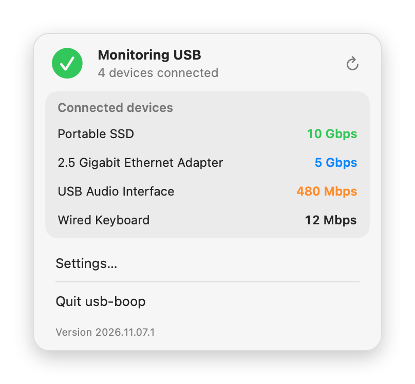
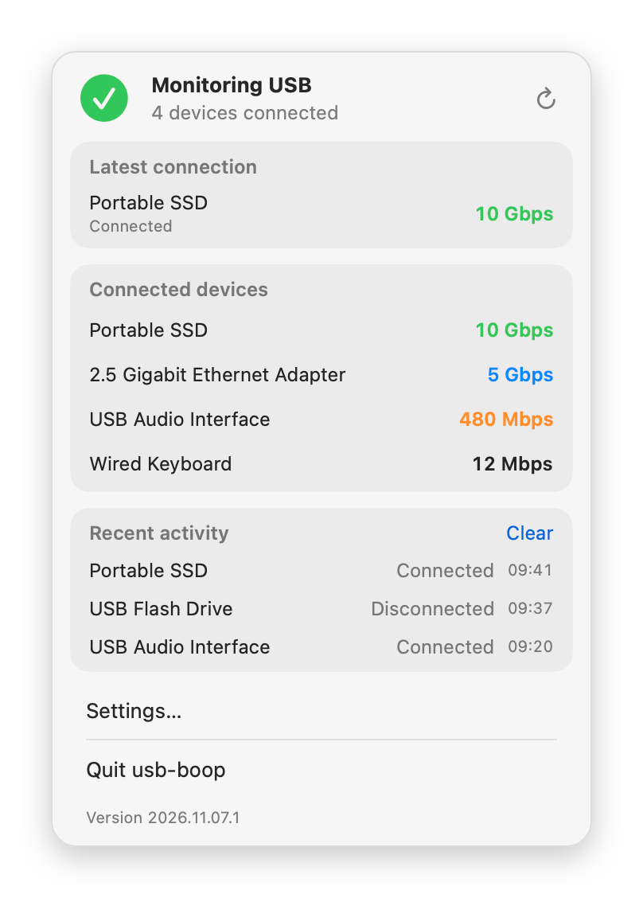
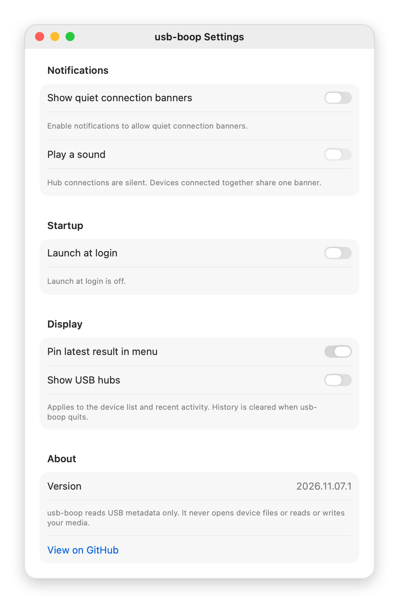

See the speed every USB device actually connected at.
usb-boop sits in your Mac’s menu bar and lists each connected USB device with its negotiated link speed, so you can tell at a glance whether a cable, hub or port is holding things back.
brew install --cask alexcatdad/tap/usb-boop
macOS 14 or later on Apple silicon. Free and open source.
What the panel tells you
The header says whether usb-boop is watching for devices and how many are connected. If macOS stops answering, it says so and offers to try again, instead of showing a list that may be out of date.
Each device in the list shows its name and its link speed. The speed is the rate the device and your Mac agreed on when it was plugged in. It is not a measured transfer speed: a 10 Gbps SSD still copies files more slowly than that, but a drive showing 480 Mbps is limited by the cable, hub or port before it starts.
- Green10 Gbps or faster (USB 3.2 Gen 2 and Gen 2x2).
- Blue5 Gbps (USB 3.2 Gen 1, once called USB 3.0).
- Orange480 Mbps (USB 2.0). A fast drive or adapter showing this is worth a second cable.
- Plain12 Mbps and slower, which is normal for keyboards and mice, or a speed macOS did not report.
When something new is plugged in, it is pinned at the top as the latest connection, and the recent activity list keeps the last few connects and disconnects with their times. Click any device to copy its name, speed and identifiers.

Settings
Connection banners are off until you turn them on; macOS asks for permission the first time. Sound is a separate switch, hubs never get a banner, and devices plugged in together share one. You can also start usb-boop at login, keep or drop the latest-connection tile, and show USB hubs in the list.

Install
- Install with Homebrew:
brew install --cask alexcatdad/tap/usb-boop - Open usb-boop from Applications. Its cat-head icon appears in the menu bar; there is no Dock icon.
- To get a banner when a device connects, open Settings, turn on connection banners and allow notifications when macOS asks.
Requires macOS 14 Sonoma or later on Apple silicon. Releases are signed with Developer ID and notarized by Apple. Update with brew upgrade --cask usb-boop. If you don’t use Homebrew, download the ZIP from the latest release and move usb-boop into Applications.
What it never does
- It reads USB device information that macOS already keeps. It never mounts volumes, opens device files, or reads or writes anything on your drives.
- It makes no network connections: no analytics, telemetry or update checks.
- It runs in the macOS App Sandbox with access to USB devices only.
- Connection history stays in memory and is gone when you quit.